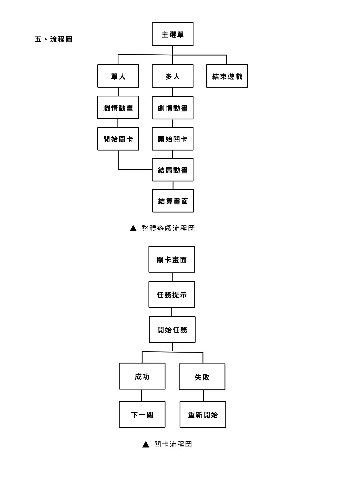
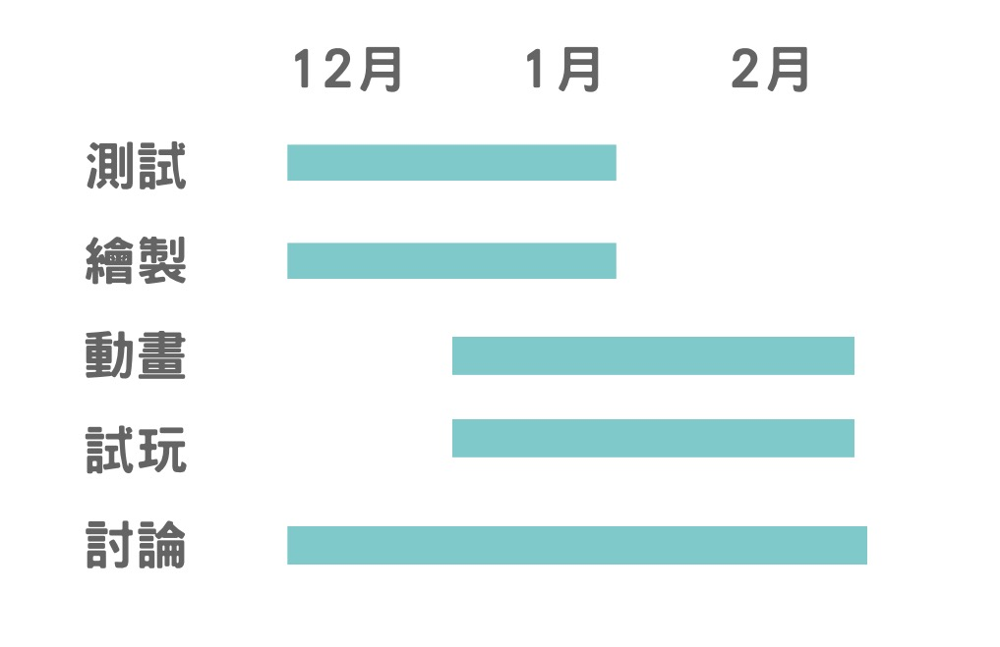

團體企劃書
乖小孩
目錄
一、製作動機
我發現不管是以前還是現在，許多關係都缺乏想法上的溝通，無論是孩子或是父母、朋友還是情人雙方都對對方有許多的要求， 尤其在生活習慣上有大大的隔閡。
例如：父母希望孩子能夠好好讀書不要一直玩手機，但孩子可能只是使用一下下而已就被斥責，雙方缺乏溝通的話很容易造成沒有必要的爭執，並且可能會有孩子隱瞞父母的狀況發生。因此我發想這款遊戲，希望可以透過可愛又搞笑荒謬的呈現方式，引起人們的共鳴，藉此促進家庭之間的溝通橋樑，同時不管是家人還是朋友都可以一起同樂這款遊戲。
二、遊戲目的
遊戲採取遊玩途徑門檻低的網頁遊戲（也可以做成軟體的那種電腦遊戲暫時還沒有定案），讓孩子們在網路上容易發現這款遊戲，0門檻的情況下與朋友或是家人一同遊玩，藉此促進親友之間的感情，也希望家長在遊玩這款遊戲時能夠了解孩子的想法，增加雙方的溝通。
一、遊玩人數
屬於多人合作遊戲，最少兩個人，最多四個人，必須要多人合作才可以完成關卡。
二、遊玩器材
使用鍵盤遊玩，一台電腦最多可遊玩一位玩家，分別使WASD與上下左右鍵，拿取與丟棄等等功能可使用左右ctrl、shift，二～四人遊玩需使用連線方式進行。
三、遊戲與美術風格
使用童趣可愛的色彩，遊戲採用平面的視角進行遊玩，玩家將扮演小孩視角，達成父母下達的任務，劇情會隨著關卡慢慢推進。
角色風格與設計圖
主角們的爸爸媽媽出去買菜就快要回來了，但是他們交代的家事還有功課都還沒有做完，而且偷偷使用的手機還有電視都要關起來才行！一定要在時間之內完成所有的目標，以免被父母發現！
一、操作方式
確定選擇：使用滑鼠或空白鍵
移動方式：使用鍵盤WASD或是上下左右鍵
放置、丟棄、使用：左右ctrl、shift等等其他按鍵
玩家可以自行設定習慣的按鍵。
二、劇情
遊戲開頭時會有一個小動畫。
（以小動畫呈現）
主角們趁父母不在時偷偷遊玩電腦、手機，一不小心忘記了時間，結果時間匆匆流逝，有人發現爸媽快要回來了！大家必須齊心協力完成任務才行！
關卡結束時會進入結局動畫，以父母回到家開門畫面呈現，表示父母最終還是發先主角們的行為了。
三、玩法介紹
遊戲遊玩時間無上限，直到玩家沒有在指定時間達成任務時，遊戲會強制中止，接著出現最高分的分數以及最長時長，玩家一旦有更高的紀錄將會再覆蓋原先紀錄。
遊戲開始時會有任務提示，可能會有父母下達的洗衣服、掃拖地、收折衣服等等的任務，也會有充飽手機電量（假裝沒有玩手機）、關閉電腦、電視讓其降溫以免被發現、寫學校功課等等，遊戲會隨著遊戲時長推進越來越多任務且困難。
四、小遊戲設計
1.時鐘沒電（滑鼠操作）
玩家需要走到時鐘附近，選擇時鐘，用滑鼠拖動的方式換上電池，換完後還要調整正確時間。
2.關電視降溫（空白鍵）
玩家走到電視附近，選取電視就會自動關閉，退熱時間約10秒，期間玩家可以做其他事。
3.收手機（可雙人）（空白鍵）
桌上、床上、廚房隨機出現手機，玩家需找到手機位子，選取手機後，先拿去充電10秒（期間玩家可以做其他事）再將手機藏至指定位子。
4.餵貓咪（空白鍵）
玩家走到貓咪附近，拿飼料餵貓咪，狂按空白鍵阻止貓咪推飼料，持續10秒，玩家的飼料需達到正常量。
5.關掉媽媽燒的熱水（空白鍵）
媽媽燒的水會隨機生成，玩家需要走到瓦斯爐附近，時不時會突然滾熟，主角需要快速關火以免火燒家。
6.煮午餐（可雙人）（空白鍵）
有些玩家會隨機肚子餓（一次會餓1～3名玩家）玩家需要走到瓦斯爐附近，煮給其他人吃（也可以合作煮）
煮法：在冰箱拿食材，丟進隨機生成的鍋子（鍋子上會有食材進度條，滿了就會開始煮）煮的期間，玩家時不時需要拿桌上的杯子加水以免燒焦，煮10秒即可（玩家會自動飽了
7.洗碗（滑鼠）
玩家需走到洗碗槽附近，洗碗槽會自己生成碗讓玩家洗，玩家用滑鼠長按並滑動，即可刷掉髒污（一次洗1～3個碗）。
8.收盤子（空白鍵）
餐桌上會自己生成盤子，玩家需要走到餐桌附近收碗，丟進洗碗槽，然後接續洗碗任務。
9.擦桌子（滑鼠）
桌子會隨機變髒，也可能因為收盤子而變髒，玩家需要走到餐桌，用滑鼠長按並滑動的方式擦桌子（跟洗碗一樣）
10.收衣服（滑鼠）
衣服會隨機生成，玩家需先去拿洗衣籃，然後走到外面收衣服。
玩法：玩家操控洗衣籃位子，衣服會隨機掉落，然後玩家需要接住衣服。外面風很大，所以時不時衣服會漂很快，接不到是你的問題，如果接不到要去洗衣服（洗衣服任務）都接到的話，玩家需要走到衣櫃，接續放衣服的任務。
11.晾衣服（可雙人）（滑鼠）
衣服洗完後要去晾衣服，先去洗衣機旁邊拿取後，走出去會開始晾衣服小遊戲。
玩法：外面風很大，衣服沒有晾好會被飛走。
玩家1需要用滑鼠拖曳衣服，交給玩家2掛上衣架，玩家1與玩家2的位子需要靠近，確認衣服有在玩家2身上才可以放開滑鼠，不然衣服會被吹走，引起洗衣服任務。
12.洗衣服（空白鍵）
衣服會隨機出現在洗衣籃需要洗，玩家需要走到洗衣籃附近，將衣服拿去洗衣機洗，10秒後洗完，會開啟晾衣服任務。
13.刷馬桶（滑鼠）
馬桶會隨機變髒，玩家需走到廁所，刷廁所，玩法與洗碗差不多。
14.澆花（空白鍵）
花時不時會口渴，玩家需要走到外面，拿起澆花器澆花，每一朵花都有進度條，並且會不停的扣進度，玩家需要10秒內，讓花進度條維持在綠色。
15.折棉被（滑鼠）
棉被時不時會突然亂掉，玩家需走到房間折棉被，這個任務有點傻逼，玩家可以透過滑鼠隨意長按滑動，折出不同形狀的棉被，折完就好了。
（約有天鵝形狀、豆腐狀、金字塔狀等等等….）
16.寫作業（可雙人）（打字、滑鼠）
玩家一會獲得一本作業書，玩家二會獲得一本答案書，兩方都會獲得相同的題目，根據題目的內容玩家二需要在答案書中尋找答案，並告訴玩家一。
17.放衣服（可雙人）（滑鼠）
玩家衣服收完了，會進入放衣服任務。走到衣櫃那邊，玩家需要將衣服從衣架拿下來，有點益智遊戲的感覺。
透過滑鼠長按拖曳，
玩家1操作衣架
玩家2操作衣服
遊戲目的是將這兩個物體分開即可（取2件即可）
18.打掃（可雙人）（空白鍵）
房子會隨機生成垃圾，在任務出現時會生成掃把，給玩家打掃。
19.收書櫃（滑鼠）
書櫃時不時會顏色亂掉，將同色系的、同高低的書擺在一起即可。
20.洗廁所（空白鍵）
廁所時不時會髒，玩家需要「一個人」去廁所拿蓮蓬頭沖，拿蓮蓬頭不可以離其他玩家太近，也不可以走出廁所。
正常情況下：廁所髒污會隨著玩家的水柱變乾淨 完成任務
噴到人的情況：引起隱藏洗澡（空白鍵），並且又要洗衣服～
噴到外面情況下：引起隱藏任務拖地（空白鍵），房子會生成拖把，讓其他玩家拖地。
玩家可以混亂邪惡把整個家玩淹水
五、流程圖

https://store.steampowered.com/app/2644470/PICO_PARK_2/
https://store.steampowered.com/app/386940/_/?l=tchinese
https://store.steampowered.com/app/673750/Super_Bunny_Man/
https://store.steampowered.com/app/728880/Overcooked_2/?l=tchinese
組長
李雅晴
動畫組
角色動畫：李雅晴
UI動畫設計：李雅晴
劇情小動畫：李雅晴
宣傳動畫：李雅晴
過場動畫：李雅晴
美術組
主美術：李雅晴
角色與UI設計：李雅晴
角色拆分：潘侑欣、施采穎、陸妤婕
表情拆分：潘侑欣、施采穎、陸妤婕
UI繪製：潘侑欣、施采穎、陸妤婕
背景繪製：潘侑欣、施采穎、陸妤婕
前景物件：潘侑欣、施采穎、陸妤婕
程式組
遊戲核心機制：李亭耘、陳俞彣
互動系統：李亭耘、陳俞彣
UI功能實作：李亭耘、陳俞彣
資料管理：李亭耘、陳俞彣
測試與錯誤糾正：李亭耘、陳俞彣
